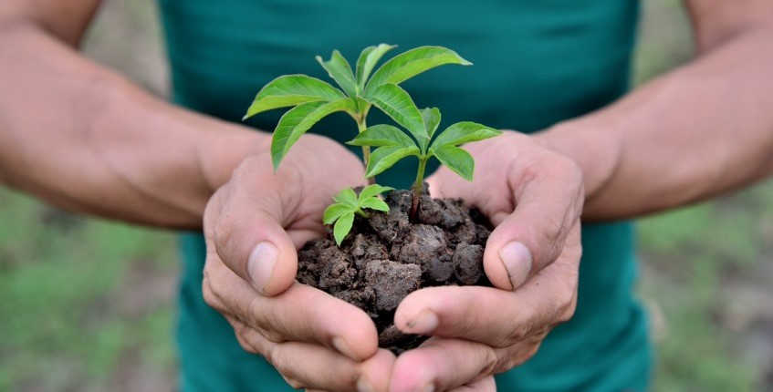

Together.We.Can is an NGO based in Nalanda and is formed by
individuals who are committed to protecting the environment. Our NGO
aims of increasing tree plantation in the state of Bihar. We have
aimed to plant and grow up to 5 crore trees across Bihar. We provide
free spalings in school, colleges and universities and let the
students plant and take care of those saplings. Also, we regularly
check up to see how the trees are and surprisingly have a 95 percent
survival rate so far. Taking it ahead, we are now planning to expand
our operations to almost all educationl institution across India.
We also believe that no one should go to bed hungary. the NGO has
delivered more than 1,00,00,000 meals to the underprivileged, in
partnership with authorities across India with more than 20 feedings
programs. We have a team of well-trained in-house cooks who follow
strict hygiene and quality parameters. Our nutritional meals and
energy snacks like biscuits, bread, rice, vegetables and mineral water
are distributed to the needy with the help of government authorities.